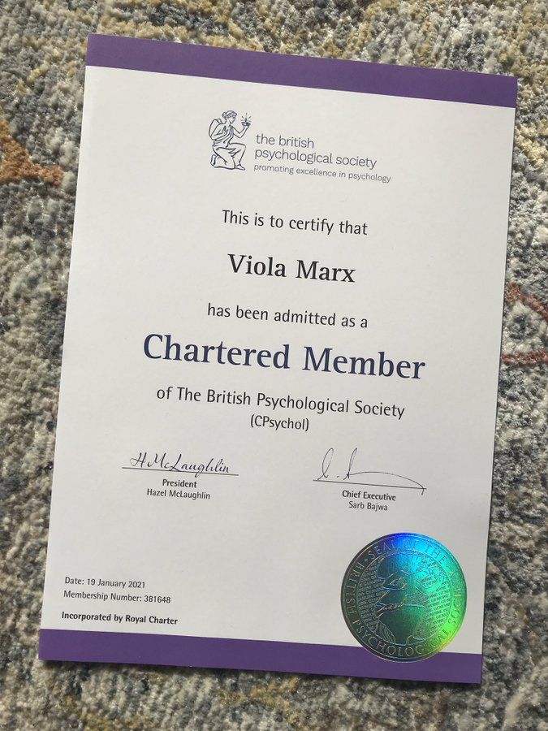

Alex Baker
0
Julia Riola
I feel freed from my negative thoughts and my hatred that I feel every day. thanks for everything Nafs!
0
Logan Lermen
0
Sophia Grace

Congratulations to my psychologist Viola Marx who was certified and admitted as a Chartered Member of The Britsh Psychological Society (CPsychol) last Tuesday, well done! you fully deserve it, i'm proud of you, because you helped me so much during my online sessions.
I would be forever grateful, for everything you did for me it was a real implication for my life, and no one has been so involved for me, you put a smile on my face, you released me, delivered me.
And I appreciate your efforts for that, I'm so thankful, relieved, pleased, and am I'm highly satisfied, Your help will stay in my heart forever, Thanks for your attention and care, I appreciate your professional care. Good job Nafs!
0